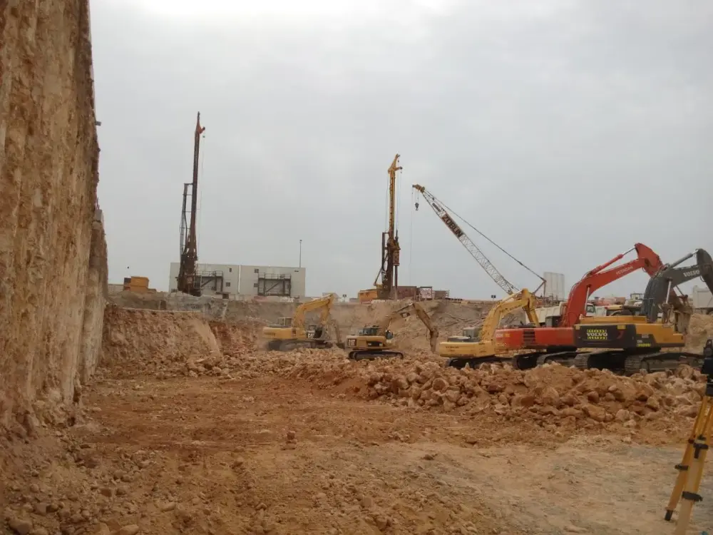
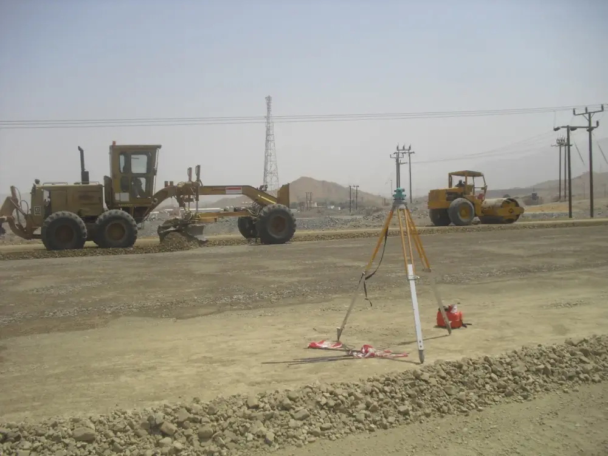
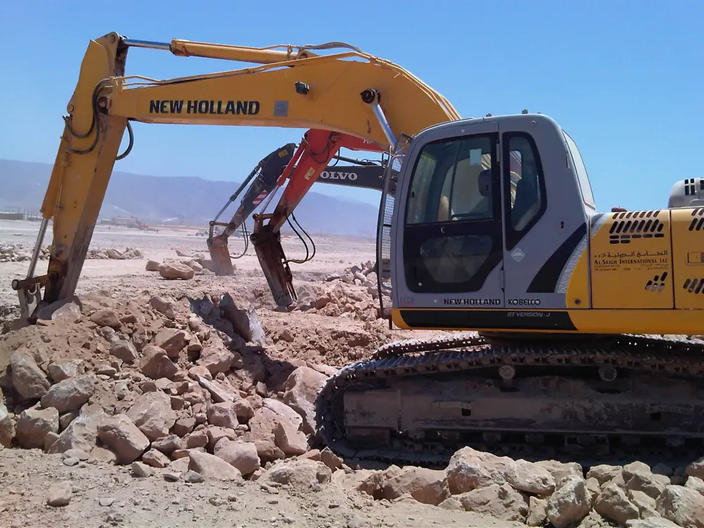
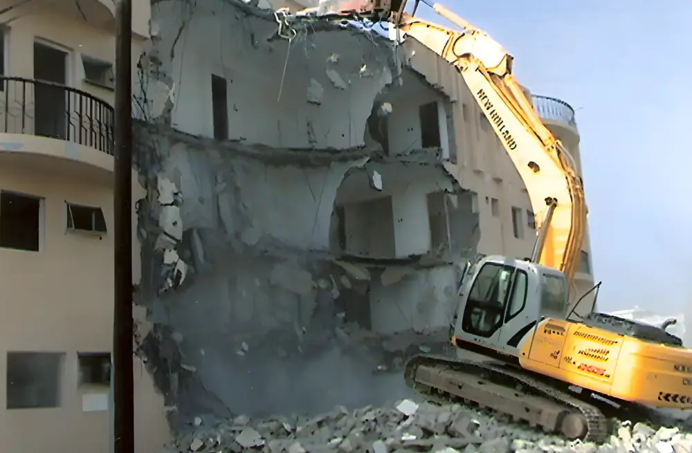
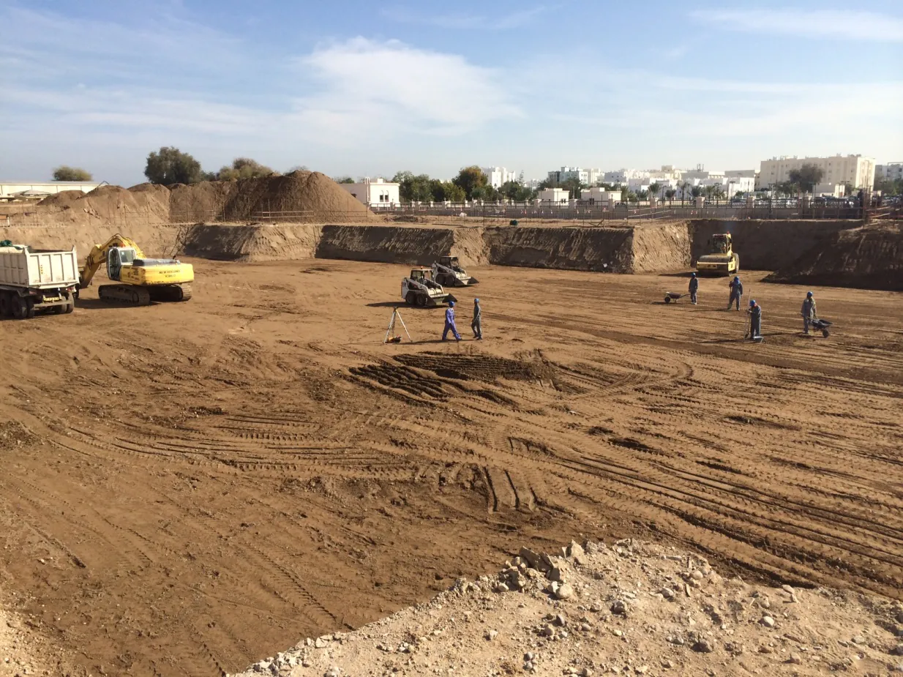
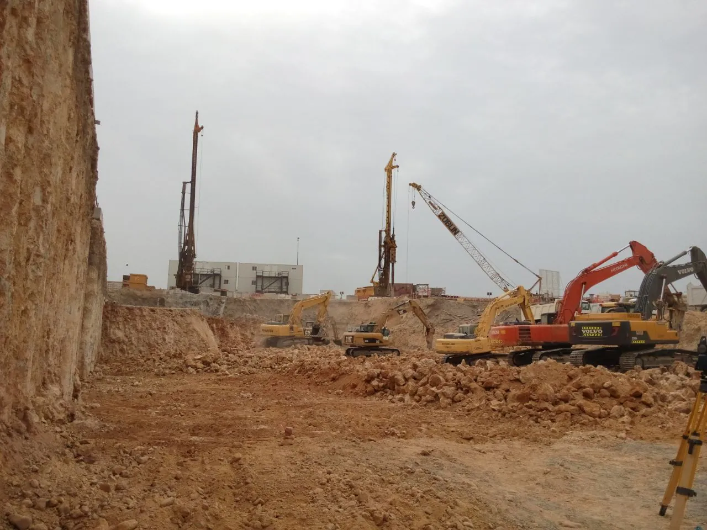

Site management
We take a professional approach to site management, so every project stays under control from the first cut to the last load out.
We move earth and rock across Oman. Mass excavation, mountain and hill cutting, access roads, site preparation, road resheeting and demolition, with our own fleet and our own site teams.
We move earth and rock across Oman. Mass excavation, mountain and hill cutting, access roads, site preparation, road resheeting and demolition, with our own fleet and our own site teams.
Bulk earthmoving has long been our core work. We run an extensive, well-maintained fleet of specialist earthmoving equipment, and we have completed substantial works in the Oil & Gas and Civil sectors.
Every job has its own site team: trained, experienced managers and operators who carry out the work to the customer's requirements, on schedule and within budget.
Six kinds of work, all of it with our own machines. Open a line for the detail.




Our own photos from the jobs, with the names we gave them.


Four things that decide whether an earthworks job finishes on time. This is how we handle each of them.
We take a professional approach to site management, so every project stays under control from the first cut to the last load out.
On-site teams of trained and experienced managers and operators carry out the work to the customer's requirements, on schedule and within budget.
An extensive, well-maintained modern fleet of specialist earthmoving equipment. Look at the cab in the photo: the machines on our sites carry our name.
Our HSE programme covers every part of our operations and aims to prevent, reduce and remove anything that could cause loss. Our directors hold every job to the same quality standard.
+968 2439 1519
P.O. Box 817, P.C. 112
Muscat, Sultanate of Oman
For a quote, email us the site location, the scope of work and any drawings or photos you have.